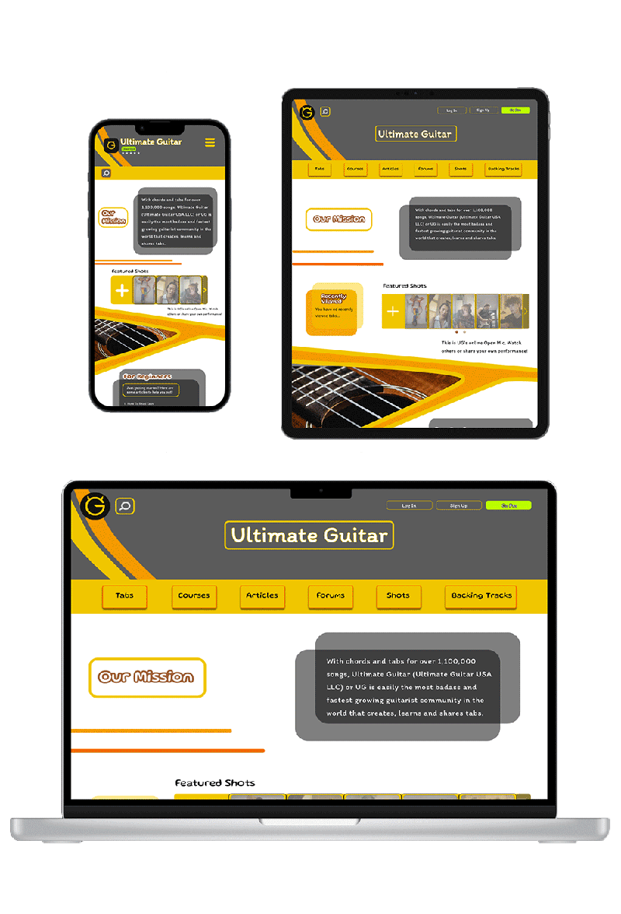
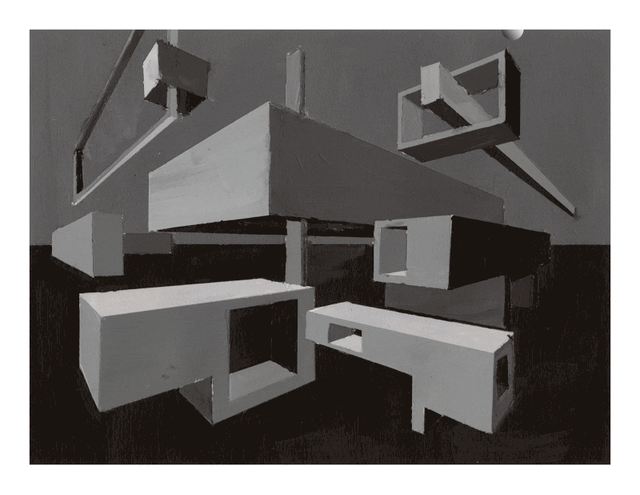

Design
Throughout my time at drexel I have found myself putting my design skills into practice. I have developed and grown in my skills and creativity through class and passion projects.
Figma and Website Redesign
Generic Website Redesign
In one class I was given a generic website and two themes to create tow basic redesigns.
Hyper Punk
Cunstructivism
![A screenshot of the Constructivism site. On the left is a poster of the silohette of a face echoing into the backgroumd of the image. The word Revolution is vertically placed to the left of the page on top of the face. Leading Design Since 1980 is next to the word revolution. Then on the right side of the page there is a poster of two fists punching up and to the right. There is a button at the top of this side image that says Take A Look. The words Architecture and Design are vertically spelled to the right of this image.](content/design/FigmaCarousel5.jpg)
Origional Redesign for Ultimate Guitar
Before I had my final redesign of Ultimate Guitar, I made this draft design. I ended up scratching it and going in a completely different direction for my Case Study.
Visual Studies Section One: Black, White, and Greyscale
In this class we focused on becoming familiar with different adobe products. I learned about the basics of composition and design along with physical art techniques.
Perspective Animation

![There are six squares of designs, three squares in two colomns. In the first column the design at the top is completely circular with accent curves and circles. The one below it is completely liniar with two rectangles pointing towrads the middle and an explosion of triangles from the midde. The final design is a mixture of curves and angles creating a triangle shape with circular accents. In the second column there are repetitive designs. The first is a squiggly design that seems to be getting pulled in the upper right direction. The next is a grid with gaps in some of the squares and lines. The third is a radial design of tiles and curved rectangles, the center of the radius being in the lower left corner.](content/design/ExpressiveLine.png)
Symmetry
Expressive Line
Value Translation
Notan Project
A Fine Line
Visual Studies Section Two: Color
Next, I focused on color and color interaction. In this section we learned about color theory, space, movement, and design.
Polygraph Portrait
Same Color
Different Color
Different Look
Look Same Look
Transparency and Movement